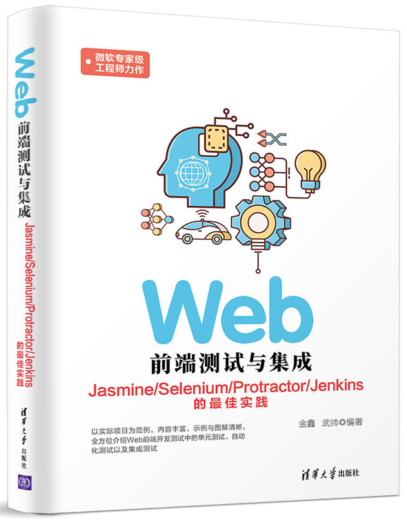

首页 > 书籍下载
《Web前端测试与集成》PDF下载（高清完整版）
|  | 作者：金鑫、武帅 |
| 出版时间：2019年07月01日 | |
| 出版社： 清华大学出版社 | |
| ISBN：9787302472759 | |
| 总页数：381 | |
| 总字数：49.7W |
这是一本以实际项目为范例的 Web 前端开发书籍，内容丰富，适合所有 Web 开发员、测试人员及项目经理学习参考。
这里提供的是《Web前端测试与集成》的高清 PDF 下载，内容完整，附带目录标签。
本书共分为以下四个部分：
1）基础篇
总览前端开发测试中的挑战与进行测试转型的方法，以及基于 Node.js搭建测试开发环境的步骤。2）单元测试篇
基于单元测试理论，深入剖析 Jasmine 测试框架，覆盖所有主流单元测试技巧。结合 gulp、Karma等构建、执行工具，对单元测试进行自动化处理，再以实战的形式来演示最佳测试效果。3）自动化测试篇
由浅入深地介绍了 Selenium 各个组件功能特点和 WebDriver 在自动化测试中的使用技巧。通过环境搭建，将代码进行自动化测试，并全面覆盖主流浏览器。4）集成篇
讲述了基于持续集成技术来实现更快、更可靠的软件交付方法。作为一名 Web 前端开发程序员，这本书对我工作中的项目开发有很大帮助，不仅在开发过程中避免了很多 bug 的出现，也让我在不断地自测过程中掌握了更深入的技能。
书籍目录
- 第1章 前端开发测试总览
- 1.1 Web技术的发展和挑战
- 1.2 传统开发流程的局限性
- 1.3 传统手工测试的局限性
- 1.4 开发模式的转型
- 1.5 本书目标
- 第2章 搭建测试基础环境
- 2.1 JavaScript的运行环境Nodejs
- 2.2 软件包管理系统NodePackageManager （npm）
- 2.3 代码编辑器（Visual Studio Code）
- ……
书籍下载
一键登录，免费下载完整版 PDF，文件名称：《Web前端测试与集成》.pdf